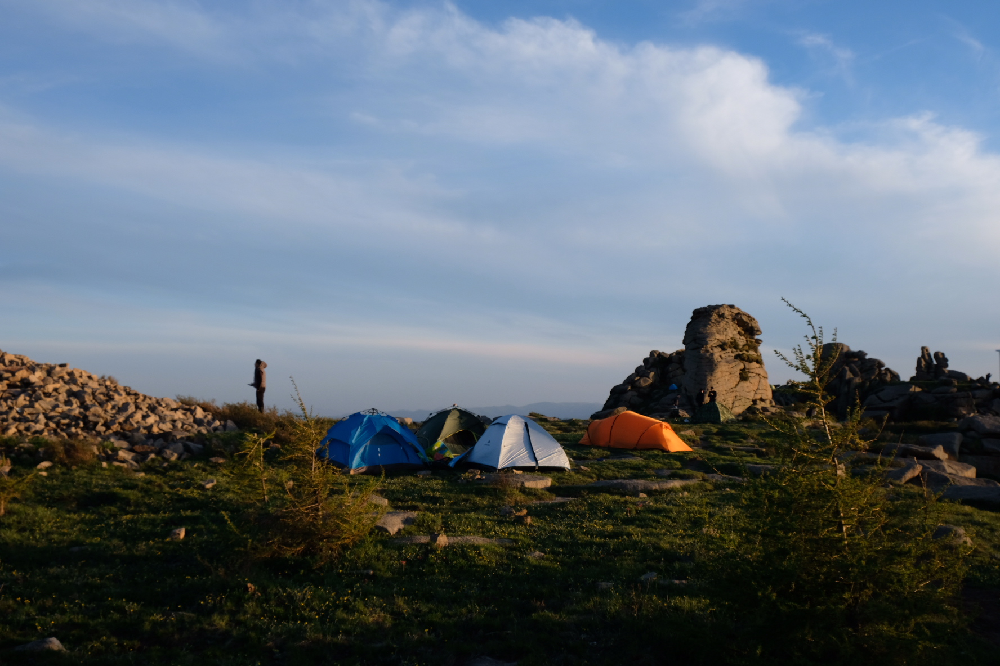
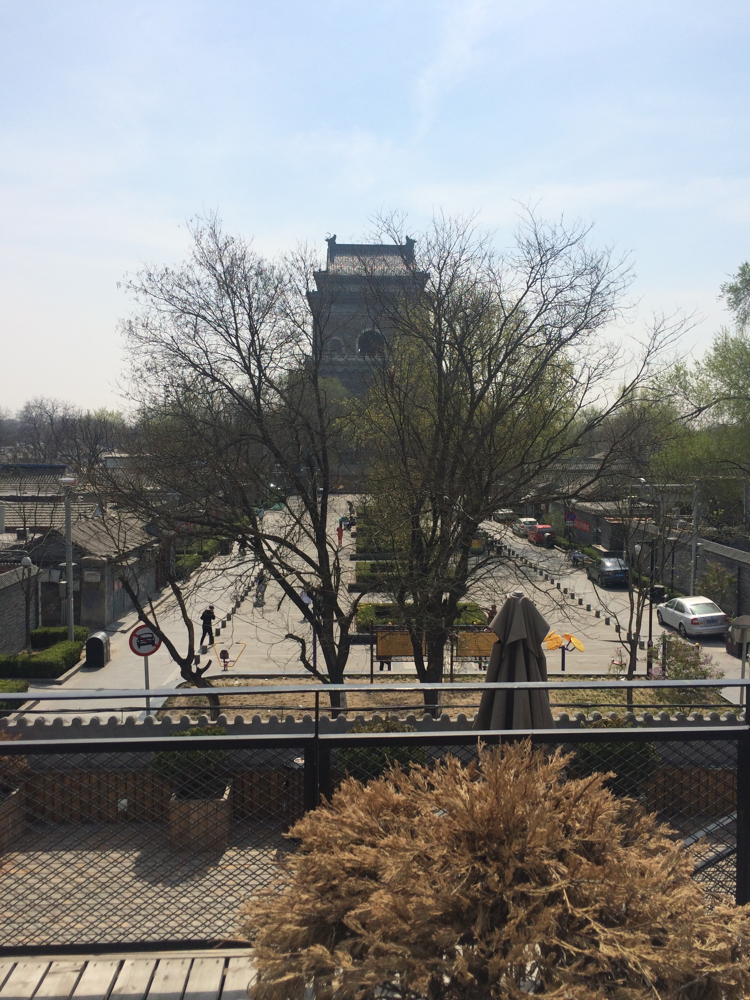

回顾 2019, 寄语 2020
2019 年过去了， 看到不少回顾 2019 的文章， 有的是技术相关的， 有的是个人对自己的总结， 这让我真正意识到 2019 真的过去了， 不只是日期从此变成了 2020-xx-xx, 2019 再也回不去了。 当我真正意识到这个事情时， 已经是 2020-01-08 的凌晨， 我也已经浑浑噩噩的度过了 2020 的第一周。
生活
生活方面， 2019 的前半年送我的大哥进入婚姻的坟墓， 也意味着他永远离开了北京这座城市； 大男孩承担起了家庭重任， 但是有了家人的陪伴他一定很幸福。
这件事导致了， 我在北京又少了一个可以依赖的人， 不禁让我思考， 我在北京还会漂多久， 当然这只能是闲愁吧。
端午节去了趟冰山梁露营， 这是我人生中第一次露营， 体验真是非常棒， 心灵的自由， 可能就是这种感觉， 我从未觉得如此无忧无虑。

趁着周末和假期， 去了秦皇岛和威海， 海边永远值得去， 天气、 海鲜确实可以让人忘却很多烦恼。 另外， 威海的人真的很少海很蓝， 养老的好选择。

下半年我高中好友结婚， 基友群里就剩我一个人未婚了， 这就导致了不管什么节假日， 我就只能自己孤独并祝他们幸福， “留下来的人苦啊”。
以为这一年就这样过去了， 但在最后几天， 感情方面也出了一些问题， 刚好和换工作等一堆事儿赶到一块儿了， 导致整个人精神状态不大好。 “生活自有它不容否认的甜美”， 但愿尽快熬过这段日子。
工作
工作方面 2019 是短暂的， 前半年充斥着紧张的工作， 压力很大， 自己确实没能有很多提升， 想推动的东西也没能实施， 导致后来慢慢的有了换工作的想法。
但是这也是对自己提升很大的一段时间， 折腾过脚手架、 组件库、 工具等， 不管质量如何， 但是确实让我学到了很多一般情况接触不到的东西。 而且， 由于有机会接触一些团队管理相关的工作， 也让自己有了更多的思考。
后来公司搬办公区， 绕着鼓楼上班的日子也到头了， 现在想想能够这么惬意的上班， 真是福气。

接着一连串的操作， 我也从年底离职了…
总结与展望
这是感悟的一年， 我开始思考自己到底应该学习什么样的技术， 去到什么样的环境， 过怎么样的生活。 工作的这 3 年多时间， 感觉时刻充满焦虑， 周末也抓紧学习， 忽略的生活的美好以及最重要的那些东西。 而且虽然没取得多大的突破， 但也感觉自己到了瓶颈期， 不再做些改变， 接下来的人生怕是会陷入迷茫。
新的一年， 希望自己努力生活， 带着感恩的心， 感受生活的美好， 继续进步的同时珍惜身边最珍贵的东西， 不再迷失自己。
Life is above everything.